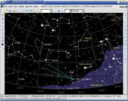
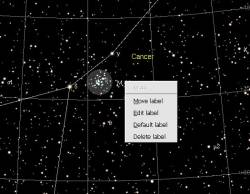

 Kometen database.
Dit werkt hetzelfde als voor de planetoïden, zie Versie 3 alpha 0.0.4 voor meer details.
Als je al eerder een planetoïden database gecreëerd hebt, klik dan de “Creëer database opnieuw om te upgraden.
Een voorbeeld data bestand (nu in de data/planet map) bevat de huidige zichtbare kometen.
Beter is het om geregeld de actuele gegevens in MPC-formaat te downloaden vanaf:
ftp://cfa-ftp.harvard.edu/pub/MPCORB/COMET.DAT
of vanaf
http://cfa-www.harvard.edu/iau/Ephemerides/Comets/SoftwareComets.html
Zorg er bij Windows voor ieder laatste character van de regel juist te converteren. In een toekomstige versie zal het downloaden beschikbaar komen om dit proces te vergemakkelijken.
 Objecten labels.
Ongeveer hetzelfde principe als bij versie 2.75, Griekse letters voor de heldere sterren.
Maar je kunt nu ht label verplaatsen of de tekst bewerken dooe een rechter muisklik op ieder label.
Een linker muisklik geeft je de gedetaileerde informatie over het object.
De veranderde labels worden tot de standaard opties of de opgeslagen kaart.
Printen
Het printer selectie menu biedt nu de keuze om de kaart direct af te drukken op een echte printer of om deze als een Postscript of BMP bestand op te slaan.
Dit geeft een kaart met hoge resolutie en met dezelfde beeldverhouding als op het scherm.
Je kunt een applicatie automatiseren om deze kaart onmiddelijk te bewerken of af te drukken.
Er is een nieuwe optie om de huidige coordinaten te gebruiken in plaats van de gemiddelde coordinaten. Dit maakt het mogelijk om voor nutatie en abberatie te corrigeren en zo preciese Aarde gerelateerde posities te verkrijgen. Veel standaard opties zijn veranderd, sommige om een bug of een onnauwkeurigheid te corrigeren. Ik raad je om die reden aan om een backup te maken van je .cartesduciel.ini instellingen bestand en daarna je oorspronkelijke .cartesduciel.ini te verwijderen voor dat je deze versie van Cartes du Ciel gaat starten.
{kind=link}
{kind=link}